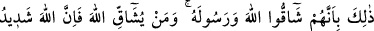
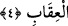

yurtlarınızdan çıkın, diye emretmiş olsaydık, içlerinden pek azı müstesnâ, bunu
yapmazlardı.” (en-Nisa, 4/66) âyet-i kerimesinde buna işâret vardır. Bununla beraber,
bir süre sonra onların bir kısmının ve onlardan doğacak çoluk çocuklardan bazılarının
îman edeceklerine ihtimal vardır.
“Âhirette de onlar için cehennem azâbı vardır.” Bu cümle, levlâ edâtının cevabına
bakılmaksızın başlangıç cümlesidir. Çünkü, onun üzerine atfedilmiş olsaydı âhiret
azâbından kurtulmaları gerekecekti. Zira levlâ edâtı, şartın bulunmasından dolayı
cezânın olmamasını gerektirmektedir. Cümlenin getirilmesi, onların sürülmelerine
hükmedilmekle her ne kadar dünya azâbından kurtulmuşlarsa da âhiret azâbından
kurtuluşlarının olmadığını belirtmek içindir.
Fakîr (Bursevî) der ki: Dünyada azaptan kurtulmuş olmaları, yurtlarından
sürülmelerinin azap kabilinden olmamasını gerektirmez. Ancak, kökleri kazınıp
tamamen yok edilme azâbına nisbetle bu sürgün azaptan sayılmamıştır.
Nadiroğullarının Medine’den sürülmelerinin sebebi şudur: Onlar Peygamberimiz
(s.a.)’i öldürmeye kasdettiler. Onu öldürmek ise bin tane öldürme olayından daha
kötüdür. Bu sebeple, her gün bin defa ölmeğe denk olan sürgün ile cezâlandırıldılar.
Çünkü bir nefsin alıştığı şeylerden mahrum edilmesi ölmesi gibidir. Bu sebeple cezâ,
amel cinsinden olması durumuna uygun olarak gelmiştir.
İşâret ehli bazı zatlar şöyle demişlerdir: Allah Teâlâ nefis yahûdileri ve hevâ
nasranileri hakkında, varlıklarının yurtlarından sıyrılma sürgününe hükmetmeseydi,
dünya istek ve sevgisi içinde onlara azab ederdi. Sonunda onlar için, kendilerini hissi
güzelliklerinden ve tabii alışkanlıklarından kesen ateş ile azab vardır.
4. Bu, onların Allah’a ve Peygamberine karşı gelmelerinden dolayıdır. Kim
Allah’a karşı gelirse bilsin ki Allah’ın cezâlandırması çetindir.
“Bu,” onları kuşatan ve kuşatacak olan cezâlar “onların Allah’a ve Peygamberine
karşı gelmelerinden dolayıdır.” Yâni Allah ve Rasûlü’nün emirlerine karşı gelmeleri
ve yaptıkları anlatılan kötü işleri sebebiyledir. Muşâkka kelimesi Arapçada kişinin bir
bölümde ve bir tarafta bulunması, karşısında olanın da başka bir tarafta bulunmasıdır.
“Kim Allah’a karşı gelirse bilsin ki, Allah’ın cezâlandırması çetindir.” Bu cümle,
cezânın kendisini tanıtmaktadır. Cezaya müstahak olana âid zamir, hazfedilmiştir. Yahut
cezânın, zikredilmeden kaldırılan sebebini bildirmektedir. Yâni “Allah ona azab eder,
onu cezâlandırır. Allah’ın cezâlandırması ise şiddetlidir” demektir. Böyle olunca onlar
için de şiddetli cezâ vardır. Bunlar, kim olursa olsun, karşı gelenlerden oldukları için bu
cezâya
uğramışlardır.
Şart
cümlesi,
bürhan
delili
yoluyla
sebebiyeti